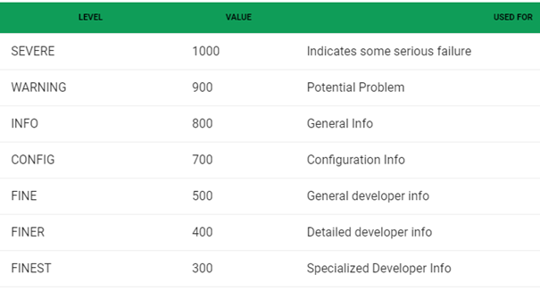
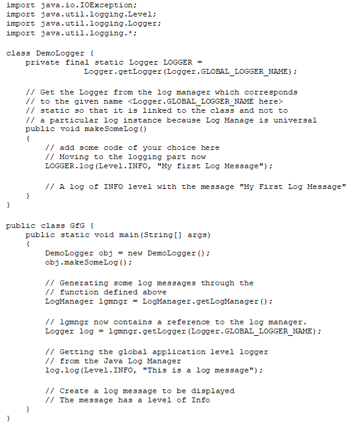
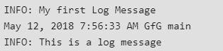
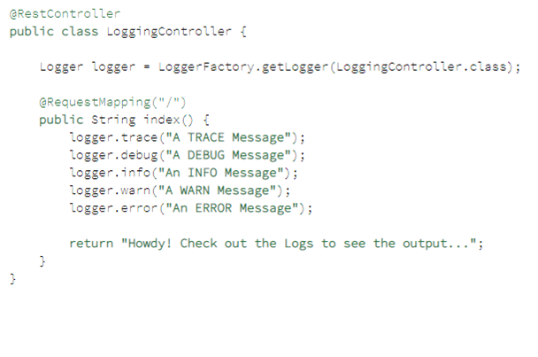
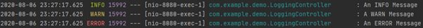

Er zijn meerdere manieren om logging toe te passen in het systeem. Ik zal hier een paar voorbeelden noemen en beschrijven hoe ze werken en waarom ze wel of niet gekozen zijn.
Er zijn meerdere manieren om logging toe te passen in het systeem. Ik zal hier een paar voorbeelden noemen en beschrijven hoe ze werken en waarom ze wel of niet gekozen zijn.
De eerste optie is het gebruik maken van java’s standaard log systeem. Aangezien het logsysteem centraal beheerd wordt is dit een makkelijke manier van toepassen. Deze manier van logging maakt gebruik van de java.util.logging.Logger class.
De Logger class heeft meerdere log levels om aan te geven hoe gevaarlijk/problematiek de log is. Hiermee wordt het mogelijk om te kijken hoe gevaarlijk een fout is.
SEVERE treedt op als er iets vreselijks is gebeurd en de toepassing niet verder kan. Database niet beschikbaar, onvoldoende geheugen etc.
WARNING kan optreden wanneer de gebruiker verkeerde invoer of inloggegevens heeft opgegeven.
INFO is bedoeld voor beheerders of gevorderde gebruikers. Het geeft meestal de acties aan die hebben geleid tot een statuswijziging voor de applicatie.
CONFIG kan zijn zoals op welke CPU de toepassing draait, hoeveel schijf- en geheugenruimte is.
Fine Finer en Finest bieden traceringsinformatie. Wanneer wat er gebeurt / is gebeurd in onze applicatie.
FINE geeft de belangrijkste berichten hiervan weer.
FINER voert een gedetailleerd traceringsbericht uit en kan logboekoproepen bevatten met betrekking tot het invoeren, verlaten en gooien van excepties.
FINEST biedt een zeer gedetailleerd traceringsbericht.
Praktisch voorbeeld:
Output:
Spring-jcl is een package dat automatisch in Springboot starter Web zit. Tijdens het gebruik van Spring-jcl kan hij met een LoggerFactory een Logger-object maken. De LoggerFactory kan gemakkelijk zeggen waar een log moet worden toegevoegd en wat voor soort log niveau het moet zijn (logniveaus: TRACE, DEBUG, INFO, WARN en ERROR).
Wanneer een thread deze code vindt, zal deze standaard een aangepast bericht in de console plaatsen. Deze instellingen kunnen worden gewijzigd om deze output bijvoorbeeld ook in rollende bestanden te loggen met behulp van Logback, dat ook in het pakket zit. Deze bestanden kunnen worden gescheiden tussen het soort logboekregistratieniveau dat u wilt, de bestandsgrootte en de datum.
Bealdung (2020, https://www.baeldung.com/spring-boot-logging) geeft een verhaal over hoe loggen in Spring Boot moet gebeuren en Brandon Jones(2018, https://www.youtube.com/watch?v=xJa-UsP9slQ) geeft hetzelfde verhaal.
praktisch voorbeeld:
Als je zou gaan kijken naar de loggings als je naar de controller gaat zie je het volgende:
Het standaard logniveau van de Logger is vooraf ingesteld op INFO, wat betekent dat TRACE- en DEBUG-berichten niet zichtbaar zijn.
Om ze te activeren zonder de configuratie te wijzigen, kunnen we de –debug of –trace argumenten op de command doorgeven:
- java -jar target/spring-boot-logging-0.0.1-SNAPSHOT.jar –trace
logback
Het ding van spring-jcl is dat je een logback kan toevoegen voor extra configuratie. Hierdoor worden de gerangschikt op kleur, worden minder belangrijkere logs niet weergeven tenzij je erom vraagt en informatie dat meerdere keren voorkomt wordt komt maar een keer voor.
Ook wordt er een .log file aangemaakt waar automatische alle logs worden opgeslagen. Aangezien deze file snel heel groot wordt moeten we ervoor zorgen dat omgevingsvariable niet worden opgeslagen aangezien ze al in de logback onderaan staan.
Ik heb in dit geval gekozen voor spring-jcl. De reden hiervoor is dat ondanks lava.logging meer loglevels heeft, spring-jcl niet alleen gemaakt is voor een spring applicatie zoals die van mij, het ook doormiddel van configuraties aanzienlijker beter zichtbaar maakt. Ook kan spring-jcl in tegenstelling tot java.logging een logback maken die alle logs permanent en goed opslaat.